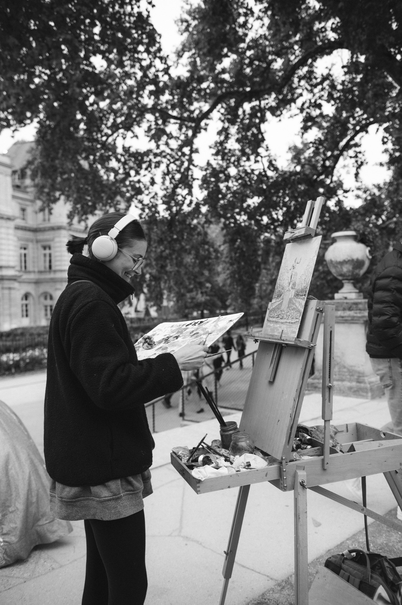

I understand painting as a way to stop time in front of the environment, whether in the lushness of a garden or the architecture of the city. I usually work outdoors (plein air), moving the easel to catch the fleeting light and atmosphere of each place, a process that later continues in the calm of the studio.
Each oil stroke seeks to convey onto the canvas the real atmosphere and truth of what I have in front of me.